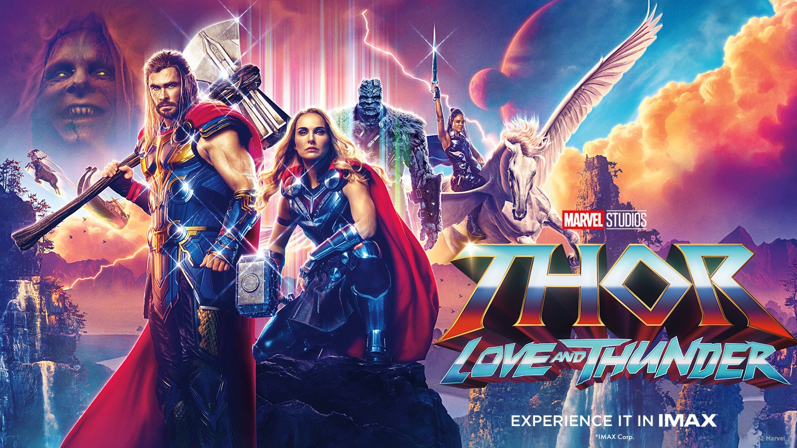

THOR:LOVE AND THUNDER
The sequel to Thor: Ragnarok and the fourth movie in the Thor saga.
Thor is attempting to be on a quest unlike anything he’s ever faced – inner peace. But, his retirement is interrupted by a galactic killer known as Gorr the God Butcher, who seeks the extinction of the gods. To combat the threat, Thor enlists the help of King Valkyrie, Korg, and ex-girlfriend Jane Foster, who–to Thor’s surprise–inexplicably wields Thorʼs own magical hammer, Mjolnir, as the Mighty Thor.
Together, they embark upon a harrowing cosmic adventure to uncover the mystery of the God Butcherʼs vengeance and stop Gorr before itʼs too late.
Age Restriction: 13
Genre: Superhero, Action, Adventure, Fantasy
Cast: Chris Hemsworth, Tessa Thompson, Natalie Portman, Christian Bale
SHOWTIMES: |13h45| |16h45| |19h:45|